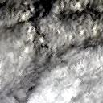

Benchmark / Near-lossless / emit-l2a-285 / emit-l2a-285-06
emit-l2a-285-06
los-angeles · 2023-04-30 · sample details
Each point shows a configuration at this budget level. The line shows the best observed trade-offs. The All corpora view pools size and decode time across samples for configurations completed on every corpus with results at this level. Broken promises are listed below.
